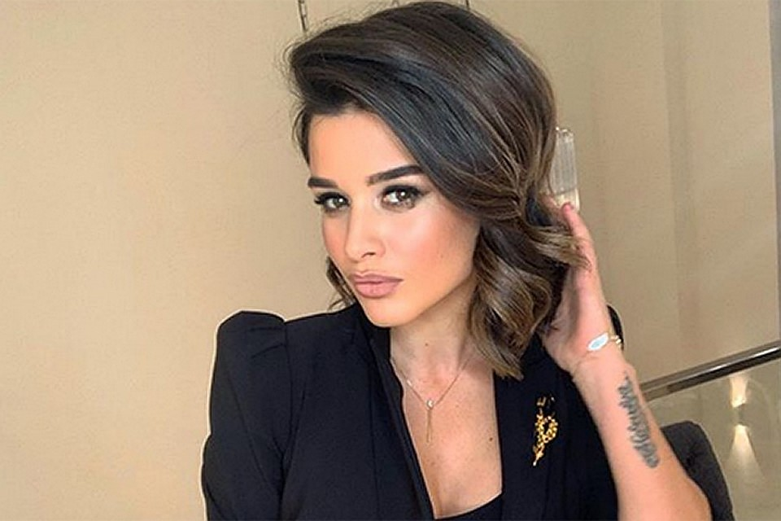

Ксе́ния Ки́мовна Бородина́ (при рождении — Амо́ева; во втором браке — Омáрова; род. 8 марта 1983, Москва) — российская телеведущая, актриса и диджей.

Родилась 8 марта 1983 года в Москве. Является курдянкой по отцу, русской по матери. Отец — Ким Джимоевич Амоев (3 марта 1940 — 18 мая 2018), мать — Инна Булатовна Бородина (р. 8 ноября 1960). Когда Ксении был один год, родители развелись. Мать позже вышла замуж за итальянского бизнесмена по имени Дженни, архитектора и владельца строительной компании и уехала в Италию, оставив дочь в Москве на бабушку Галину Ивановну и дедушку Булата Биляловича (приёмный отец Инны Булатовны). Приезжая в Россию, мать дарила много подарков дочери, в 1990-е это помогло семье выжить, они меняли дорогие вещи на еду, но матери ничего не говорили. Когда Ксения повзрослела, она стала часто летать в Италию и смогла подружиться с отчимом.и дедушкой. Некоторое время училась в английской школе «Мультилингва». В 18 лет (из-за обиды на отца) взяла фамилию матери. У Ксении есть двоюродный брат Никита, начинающий рэпер, выступающий под псевдонимом «Стахат». После окончания частного лицея с углублённым изучением иностранных языков Ксения поступила сразу на второй курс Института гостиничного менеджмента и туризма по специальности «менеджер по туризму». С 2004 года ведущая проекта «Дом-2» на телеканале ТНТ